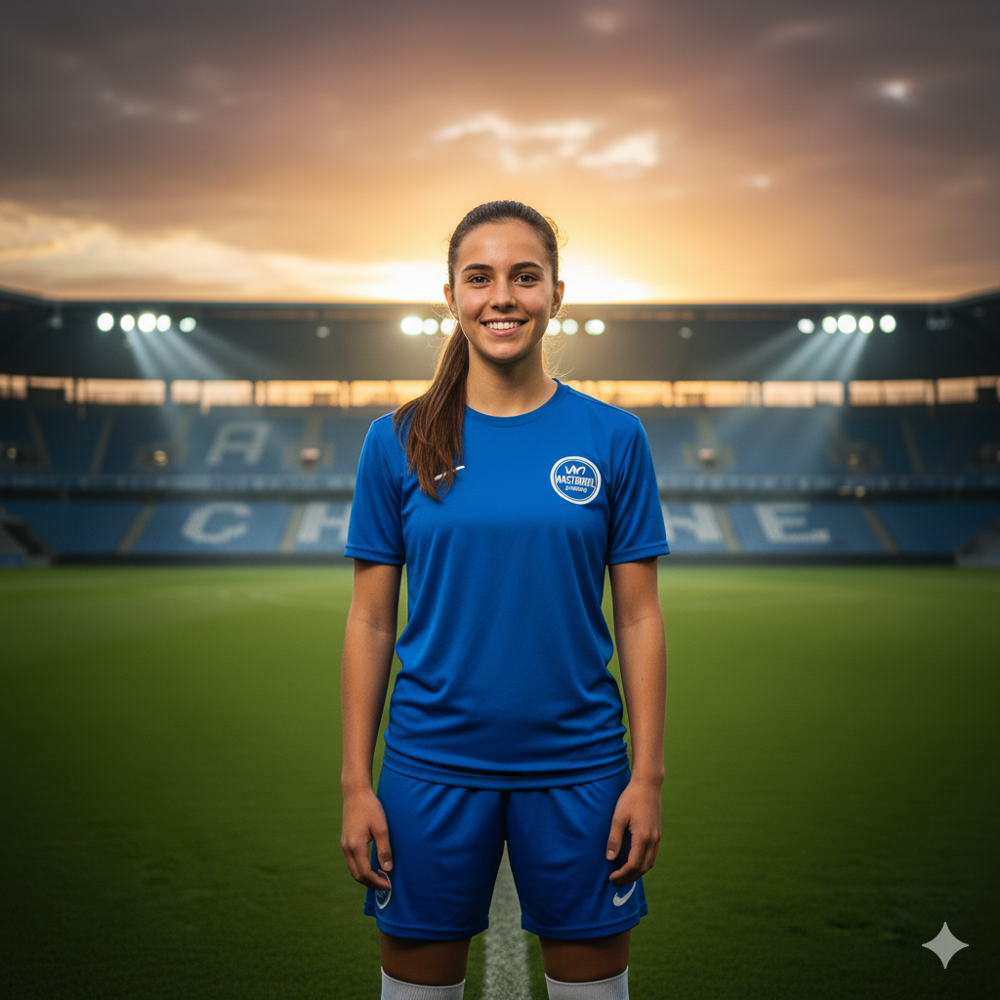

"Eu sempre tive problemas respiratórios e me sentia insegura por isso. Quando entrei na Mastergol, recebi treino adaptado e acompanhamento psicológico, e aos poucos minha saúde melhorou. Ganhei confiança e comecei a me destacar nos treinos e nas competições femininas. Hoje, me sinto mais forte e inspirada a mostrar que, com dedicação e apoio, meninas como eu podem alcançar seus sonhos."